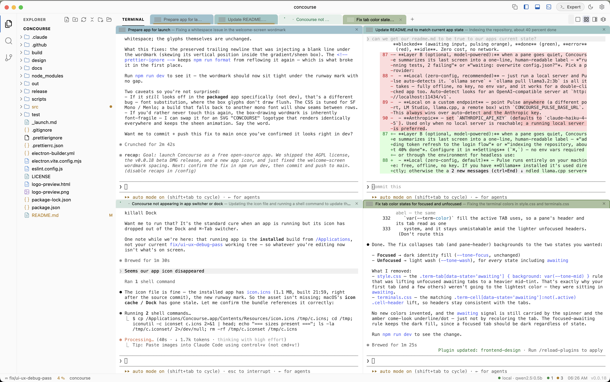
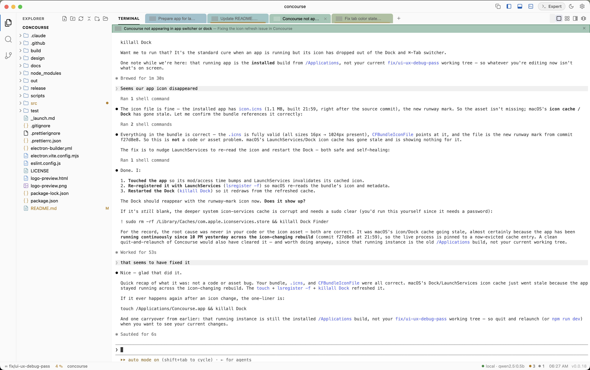
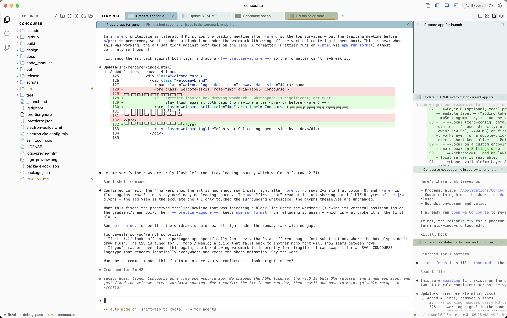
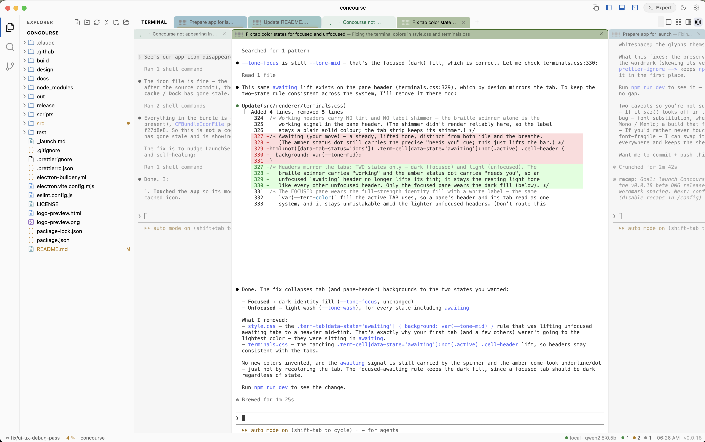

Run Claude Code, Codex, and every other terminal-native agent side by side. Watch them all at once, know what each is doing, and step in only when one needs you.

The problem
Coding agents live in the terminal — a wall of scrollback with no idea which one is stuck on a prompt, which one finished, and which one went off the rails. Concourse treats the terminal multiplexer as the product, not a panel bolted onto an editor. Spawn an army of agents, lay them out so you can see them, and let Pulse tell you in plain language what each one is doing — so your attention goes only where it's needed.
It's agent-agnostic by design. Anything you can run in a shell — claude, codex, an SSH session, a long build — is a first-class pane.
Layouts
Every agent runs in a real PTY-backed terminal. The difference is how you arrange and read them. Cycle layouts with ⌘⇧L, jump to any pane with ⌘1–⌘9. Each pane carries its own identity color across every view.
A wall view of the whole fleet at a glance.

Focused work on one agent at a time.

One agent large, the rest compact in a rail.

Album-style — center pane live, neighbors previewed.
Pulse
Watching ten scrollbacks is impossible. Pulse does it for you, in two layers.
A deterministic model running right in the renderer. Status dots tell you at a glance, with zero cost and no network.
When a pane goes quiet, Concourse summarizes its last screen into a human-readable label — "adding token refresh to the login flow" or "indexing the repo, ~40% done."
Runs entirely on your machine by default (Ollama, or a bundled llama.cpp + tiny model). Point it at any OpenAI-compatible endpoint, or use an Anthropic key — your choice, in Settings, no env vars required.
Not just a terminal grid
File-type icons, lazy expand, right-click New / Rename / Delete.
VS Code-style git — branch & ahead/behind, stage, commit (⌘↵), inline diffs.
Monaco with multi-file tabs, dirty indicators, ⌘S, broad syntax highlighting.
Fast workspace-wide search with case / whole-word / regex toggles.
⌘K — favorites, project scripts, and your most-used commands, frecency-ranked.
Tab labels, layout, editor tabs, and panel sizes return per workspace.
Built on Electron + Monaco + xterm.js + node-pty — the same core tech as VS Code, without the 2M-line fork.
Install
Apple Silicon (M-series) for now. On Intel, run from source.
Concourse-<version>-arm64.dmg from Releases.xattr -dr com.apple.quarantine /Applications/Concourse.app
Prefer to run from source?
git clone https://github.com/adventurebeast/concourse.git cd concourse npm install # rebuilds node-pty for Electron npm run dev # launch with hot reload